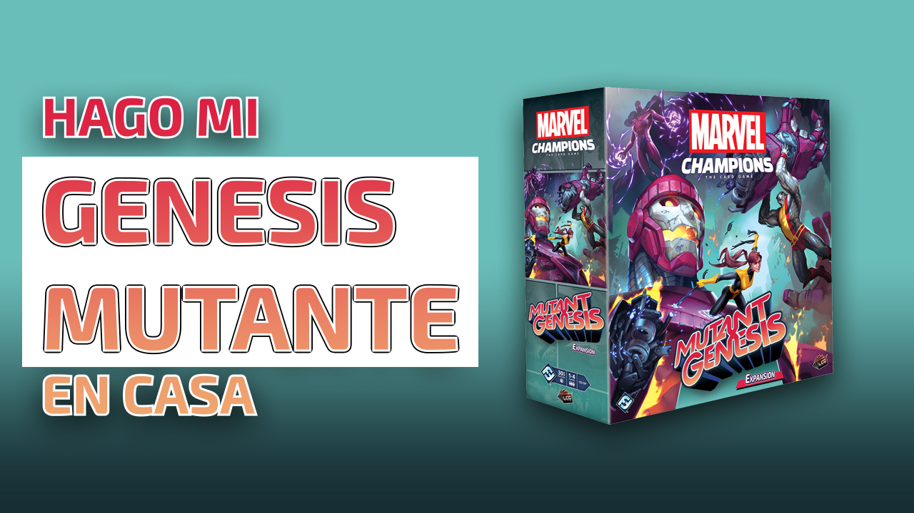

On this video we go over the basics that I think about every time I start making a game. These could work for you or not, but I find them highly important!
On this tutorial I show you how I made myself a very professional looking game box. You can do your own to store your games, replace an old box, or just decorate.

In this tutorial, the second of the series we learn how to cut every card so that they look nice and squared. This is important because we need to be able to shuffle them.

In this tutorial, the first of a series, we start learning how to setup photoshop to be able to organize your boardgame to sent to print.